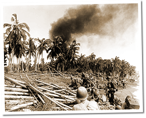

|
j
a v a s c r i p t |
Pg.2/2
October 23, 1944
Tacloban was taken at 1500 on Friday, five hours after the landing. You can guess what the Japanese-controlled press is saying: The Americans are trapped; Filipinos will rise as one to fight them off; the Japanese will defend the Philippines.

On a Leyte Beach
William J. Dunne's reaction at the "reception" given to the Americans entering Tacloban shouldn't have surprised him. As Dad says, "Leyteños are a fine people." The point is that geographical distinctions in the Philippines have bred equally distinctive characters. The Visayans in the center and south have suffered the worst in these last 2-1/2 years, many of them taking to the mountains. The Japanese might have benefited from better transportation, improved airfields and bumper crops of sugar, but they've been unable to hire workmen, march with impunity into the interior, or land their batels at will on any Visayan coast. All their efforts to win Visayans over have failed. The Tagalogs in the north, on the other hand, have had their share of traitors and collaborators. The Visayans are fanatics, as Maurice told me in the spring of 1943: "If a Visayan tells you that MacArthur will land in thirty days, or that the entire Japanese Navy has been sunk, don't contradict him. Just shut up and agree." ...ooOoo... |
|
|
|
|